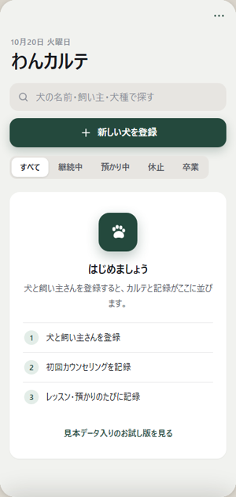
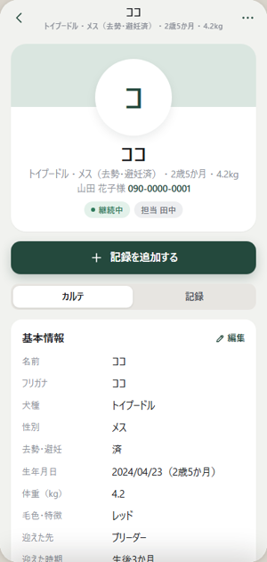
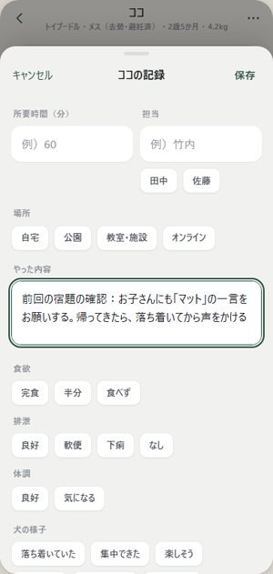
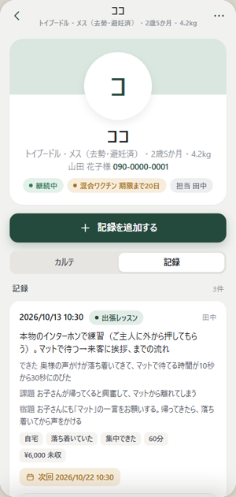

わんカルテの使い方
犬ごとのカルテと、毎回のレッスン記録・預かりの日誌を、スマホにまとめておくアプリです。
1はじめ方（ホーム画面に追加）
アプリのように使えるよう、最初にホーム画面へ追加します。
iPhone（Safari）
- Safari でアプリのページを開く
- 下の 共有（四角から矢印が出ているマーク）を押す
- ホーム画面に追加 → 追加
Android（Chrome）
- Chrome でアプリのページを開く
- 右上の ︙ → ホーム画面に追加（または「アプリをインストール」）

はじめて開いた画面
はじめて開くと、自分の名前（担当名）と屋号・教室名を聞かれます。名前は記録の「担当」に最初から入ります。あとから右上の … で変えられます。
iPhone では、ホーム画面のアイコンから開いたものと、Safari で開いたものは保存場所が別です。毎回、ホーム画面のアイコンから開いてください。
2犬を登録する
- トップの ＋ 新しい犬を登録 を押す
- 犬の名前（必ず）と、わかる所だけ入れて保存
- 犬の画面の カルテ で、カードを押すと続きを書けます
基本情報犬種・性別・生年月日・体重・担当
飼い主連絡先・住所・駐車場・家族
健康病院・ワクチン・持病・咬傷歴
生活食事・散歩・トイレ・留守番・好き嫌い
困りごと・目標あてはまるものにチェック
できることおすわり・まて などを3段階で
出張メモ場所・アクセス・訪問時の注意
預かり開始日・お迎え日・持ち物

犬のカルテ
トップの 状態（継続中・預かり中・休止・卒業）で絞り込めます。名前・飼い主・犬種でも探せます。未収 を押すと、お代がまだの記録と合計が出ます。
ワクチンの期限が近い（30日以内）・切れた犬は、カルテに札が付き、トップの 予定 にも出ます。
3記録をつける
- 犬の画面で 記録を追加する を押す
- 種類を選ぶ：出張レッスン・預かり日誌・カウンセリング・その他
- やった内容・できたこと・課題・飼い主への宿題・料金などを入れて保存
次回の予定日を入れると、トップの 予定 に出ます（預かりの開始日・お迎え日も出ます）。
預かり日誌では、食欲・排泄・体調 も残せます。
前回の宿題を引き継ぐ
記録を追加する を押すと、いちばん上に 前回の宿題（前回の日付・宿題・課題）が出ます。内容に入れる を押すと、「やった内容」の頭に「前回の宿題の確認：…」が入ります。

記録の入力（前回の宿題を入れたところ）
記録は犬の画面の 記録 タブに、新しい順で並びます。押すと直したり消したりできます。
4レッスン報告をコピーする
記録の中身を、飼い主さんに送る文にしてコピーできます。
- 犬の画面の 記録 タブを開く
- 送りたい記録のいちばん下の 飼い主さんへの報告をコピー を押す（「コピーしました」と出ます）
- LINE やメールを開いて、貼り付けて送る

記録タブ（各記録のいちばん下に報告のコピー）
文は「今日やったこと・できたこと・これからの課題・おうちでの宿題・次回の予定」の形にまとまり、最後に屋号（無ければ担当名）が入ります。送る前に、ひと目見てから送ってください。
5準備中の機能
バックアップとチームでの共有は準備中です。今は、1台のスマホで使う形です。記録はそのスマホの中に保存されます。
6こまったとき
入れたはずの犬がいない
ホーム画面のアイコンから開いていますか？ Safari・Chrome で開いたページは、保存場所が別です。
お試し版（見本の犬が入っている版）
アドレスの最後が ?demo のページはお試し版です。自由に触って大丈夫。中身はこの端末にだけ残り、本番とは混ざりません。見本に戻す で最初の状態に戻せます。
画面が古いまま
アプリを一度とじて、開き直してください。